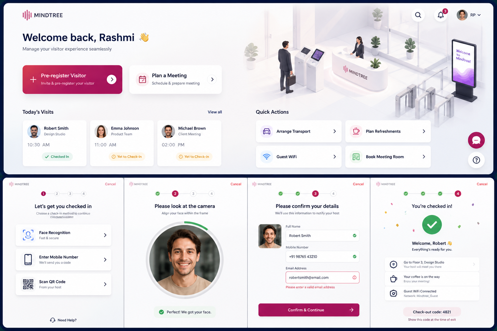
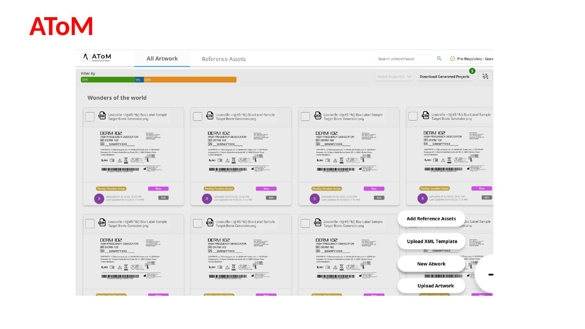
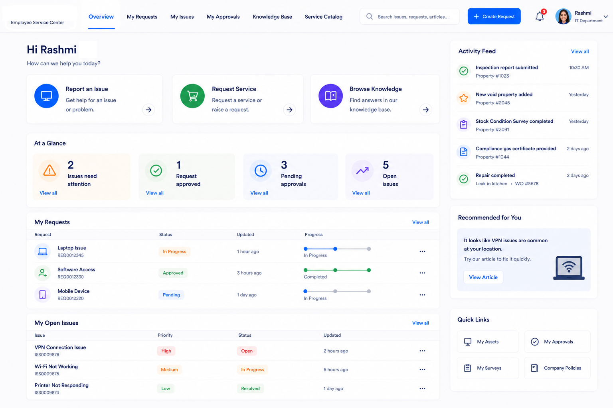
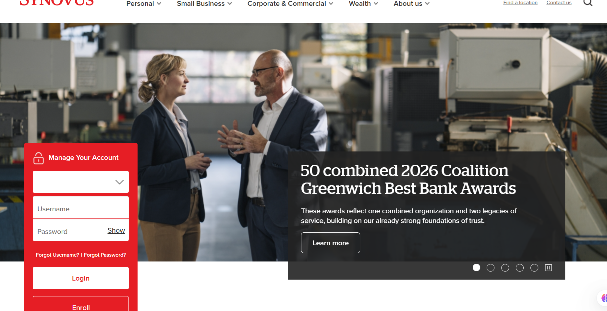
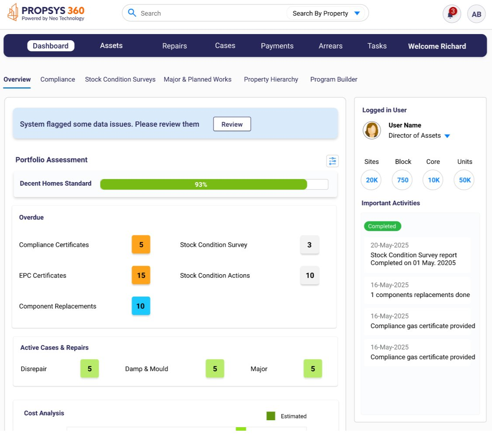

RASHMI
PADMANABHA
Staff Product Designer | AI Experience Design (AIxD) | Agentic Workflow UX | WCAG 2.2 SME | Behavioural Psychology | Enterprise SaaS
18+ years leading UX for enterprise AI-powered products and agentic workflow systems — achieving 94% faster time-to-information, 77% user trust gains, and shipping design systems adopted by 8+ cross-functional teams. I partner with product and engineering to turn complex, high-stakes workflows into experiences that move business metrics.
THE DESIGNER
BEHIND THE WORK
I am a Product Designer and Experience Research Strategist who has spent 18+ years making complex enterprise systems feel intuitive, human, and worth using.
My work spans enterprise intranet platforms, AI-assisted interfaces, conversational UX, content authoring systems, and search - across financial services, B2B, public sector, and consumer products.
What makes me different is a grounding in Behavioural Psychology (MA in Behavioural Psychology — MIT, in progress) - I don't just observe what users do, I understand why they feel stuck, uncertain, or capable. That shapes every design decision, from taxonomy to tone of voice.
"I design for the person who has no choice but to use the tool - and that responsibility shapes every decision."
I've led cross-functional teams across engineering, product, and content. I'm comfortable with ambiguity, energised by complex systems, and deeply committed to accessibility and inclusive design.
WHAT I DO BEST
- Holistic UX vision & roadmap
- Platform architecture alignment
- Stakeholder & leadership partnership
- Resource prioritisation
- Cross-functional delivery
- Navigation models & IA
- Core component systems
- Enterprise page templates
- Scalable layout systems
- Wrapper logic & front-end behaviours
- Enterprise search & discovery
- Facets, filters & query refinement
- Taxonomy & metadata systems
- Conversational AI & chatbots
- Generative AI-assisted UX
- Content creation & editing workflows
- Review & approval processes
- Localisation & translation UX
- Personalisation & segmentation
- AI-assisted smart tagging
SELECTED WORK
Five focused case studies across agentic workplace experience, enterprise SaaS, asset management, and accessibility - with the strongest details on the landing page and full stories inside each case study.
AI-POWERED INTELLIGENT CHECK-IN
Mindtree Workplace Experience - Business Analyst + Product Designer
A fragmented visitor journey became one connected system: pre-visit planning, AI-enabled self check-in, instant access, guided navigation, hospitality automation, and an on-demand visitor assistant for clients, hosts, and reception teams.

KALIK ENTERPRISE SAAS PLATFORM
Kalik - Lead UX - Artwork, Approval & AI Validation
Three fragmented product problems became one enterprise SaaS application: artwork creation for mixed-skill users, governed file management with approvals and version control, and AI-assisted label validation for regulated pharma and FMCG teams.

Smart Ticketing System - Workplace Experience
Business Analyst + Product Designer
Empowering 90K+ employees to raise, track, approve and resolve IT requests seamlessly A unified IT Service Management (ITSM) platform built on ServiceNow to streamline the end-to-end lifecycle of IT requests and incidents.The system enables employees to:Raise IT issues and service requests, Track status in real-time, Go through approval workflow, Provide feedback after resolution

WEB ACCESSIBILITY AUDIT
Synovus Bank - Lead UX + Research
A banking accessibility audit that turned 47 WCAG violations into a prioritized remediation roadmap, improving the accessibility score from 31 to 89 and expanding access for 220K+ users.

PROPSYS 360 — ASSET MANAGEMENT PLATFORM
Neo Technology / UK Social Housing — Lead Product UX Designer · 20 Weeks
A role-adaptive asset management platform for UK social housing teams, giving Directors, Void Managers, Compliance Officers, and Repairs Managers the right KPIs, alerts, and workflow actions from one dashboard system.

LET'S WORK TOGETHER
A research-led, iterative approach that aligns business goals, user needs, and technical constraints from day one.
18 YEARS OF
DOING THE WORK
- Defined holistic UX vision and strategy for enterprise intranet platform - aligning architecture, user journeys, intelligent systems, and authoring tools.
- Owned structural experience layer: navigation models, IA, core component systems, enterprise page templates, and scalable layout systems.
- Led UX for intelligent experiences - enterprise search, faceted discovery, query refinement, taxonomy, metadata systems, and conversational AI.
- Designed and delivered conversational AI chatbot UX framework; developed generative AI-assisted UX patterns across platform.
- Owned content authoring and publishing UX: creation/editing workflows, approval processes, localisation, personalisation, and governance.
- Integrated AI-assisted authoring - smart tagging, accessibility prompts, content recommendations.
- Championed WCAG 2.0/2.2 accessibility; zero critical failures at audit across all platform touchpoints. Improved user trust scores by 77% through transparency-focused AI interaction design.
- Designed scalable, user-centred interfaces for enterprise platforms across financial services, B2B, and public sector — serving 40,000+ users globally.
- Built and shipped enterprise design systems adopted across 8+ product teams — reducing UI inconsistencies by 88% within 6 months of adoption.
- Synovus Bank Accessibility Audit: Led WCAG 2.1 AA audit — identified 47 violations, improved score from 31→89, achieved 94% AA compliance, expanding access for 220K+ users.
- ServiceNow ITSM Smart Ticketing: Designed unified IT service management platform for 90K+ employees — 100+ IT services, 35% faster resolution, 85% user satisfaction, 2.5x first-time resolution rate.
- Led contextual inquiries, usability testing, and behavioural analysis; translated findings into platform-wide IA and navigation improvements.
- Delivered 28% uplift in task completion rate and WCAG 2.0 AA compliance on flagship B2B platform at launch.
- Collaborated with engineering, product, content, and business stakeholders to deliver complex UX initiatives at enterprise scale.
HOW I THINK
ABOUT DESIGN
TOOLS I WORK WITH
DESIGNER WHO
BUILDS
Beyond client delivery, I build AI-powered tools that solve real accessibility and design workflow problems — practitioner-built, not proof-of-concept.
AccessibleOS
Claude-Powered WCAG 2.2 Audit Plugin
A Figma plugin and standalone audit tool that uses Claude AI to run automated WCAG 2.2 checks, surface violations with contextual remediation guidance, and generate developer-ready reports — cutting audit time from hours to minutes.
- Automated WCAG 2.2 AA/AAA detection across colour contrast, alt text, focus order, and landmark roles
- Claude AI generates plain-English remediation steps mapped to each specific component
- Exports structured audit reports with issue severity, WCAG criterion, and fix priority
- Live contrast checker with token-level suggestions for design system alignment
- Screen reader simulation layer to preview announcement order before dev handoff
DesignOS Hub
AI-Powered UX Research & Design Workflow Platform
A personal operating system for UX practitioners — bringing together research synthesis, insight tagging, design decision logging, and Claude-assisted pattern recognition into one connected workspace that gets smarter with every project.
- Research synthesis engine: Claude reads raw interview transcripts and surfaces patterns, tensions, and opportunity areas automatically
- Decision memory system: logs every design decision with rationale so future work never loses context
- AI-assisted persona and JTBD generation from qualitative data
- Design system integration layer — maps research insights directly to component-level changes
- Content strategy module with accessibility-first content scoring for enterprise teams
WCAG-Compliant
Enterprise Design System
Token-Based, Accessibility-First Component Library
Built and shipped a full enterprise design system adopted across 8+ product teams — 60+ components, a 3-tier token architecture, and embedded WCAG 2.2 compliance at the system level rather than as a checklist afterthought.
- 3-tier token system: Primitive → Semantic → Component tokens for consistent theming and dark/light mode
- Every component ships with WCAG 2.2 annotations, keyboard interaction specs, and ARIA pattern guidance
- Auto-generated accessibility documentation synced with Figma and dev handoff
- Governance model: contribution guidelines, versioning, and deprecation process for cross-team adoption
- Reduced UI inconsistencies by 88% across the product suite within 6 months of adoption
READY TO BUILD
SOMETHING GREAT?
Available for remote Product Designer, Senior UX, and Experience Research roles worldwide.
.jpg)
.jpg)